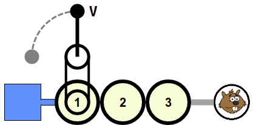

Ratkaisu
Tehtävän voi ratkaista alla luetellulla klikkausketjulla. V tarkoittaa vivun kääntämistäV tarkoittaa vivun kääntämistä vasemmalle, O vivun kääntämistä oikealle, ja numero oheisessa kuvassa kyseisellä numerolla merkityn pyörän klikkaamista.
2 V 2 V 3 V 3
2 V 2 V 3 V 3 V 4 V 4 V 6 V 6
7 V 7 V 2 O 2 O 10 V 10 V 9 O 9 V 12 O 12 V 14 O 14

Tehtävää voi yrittää ratkaista monella tavalla. Alla on kuvattu yksi melko helppo lähestymistapa.
Käännetään aluksi vipuun yhdistetty pyörä oikeaan asentoon. Tämän jälkeen käsittelemme loputkin pyörät niin, että jokaisella askeleella kasvatamme veden saavuttamien pyörien lukumäärää vähintään yhdellä.
Valitaan sellainen jonkin jo vettä saavan pyörän vieressä oleva pyörä, joka ei saa vettä. Käytämme ensin vipua niin monta kertaa, että kyseinen pyörä tulee oikeaan asentoon. Tämä toimenpide jättänee aiemmin vettä saaneet pyörät väärään asentoon. Korjaamme ne takaisin oikeisiin asentoihin klikkaamalla nyt oikeaan asentoon kääntämäämme pyörää, jolloin se irtautuu aiemmista pyöristä, ja kääntämällä sen jälkeen vipua käyttäen aiemmat pyörät takaisin oikeaan asentoon niin, että ne saavat taas vettä. Lopuksi klikkaamme edellä irrotettua pyörää uudelleen, jolloin se jälleen kiinnittyy näihin aiempiin pyöriin.
Toistamme edeltävää menettelyä kunnes kaikki pyörät saavat vettä.
Tämä on tietojenkäsittelyä!
Vaikeimmassa versiossa oikeastaan manipuloitiin niin sanottua juurellista puuta, joka on yleisesti käytetty apuväline tietojenkäsittelyssä. Tehtävässä vesitankki vastaa puun juurisolmua ja pyörät ja majavat muita solmuja.
Meidän piti kyetä järjestämään kaikki pyörät keskenään oikeisiin asentoihin. Ehdotettu esimerkkiratkaisu voidaan tulkita puun solmujen järjestelmällisen läpikäynnin (esimerkiksi syvyyshaun) ja ahneen algoritmin yhdistelmäksi. Syvyyshaku on eräs järjestelmällinen tapa käydä puun kaikki solmut läpi sen juurisolmusta alkaen. Ahne algoritmi taas tarkoittaa sellaista ongelman ratkaisutapaa, jossa aloitetaan pienestä osaratkaisusta (esim. vain vivun viereisen pyörän asettamisesta oikein), ja osaratkaisua laajennetaan askeleittan kohti kokonaista ratkaisua niin, että jokainen osaratkaisun laajennusaskel tehdään sillä hetkellä parhaalta vaikuttavalla tavalla (tässä: aiempaan osaratkaisuun lisättävä pyörä asetetaan oikeaan asentoon).
Katso lisää esim. https://fi.wikipedia.org/wiki/Puu_(graafiteoria), https://fi.wikipedia.org/wiki/Syvyyssuuntainen_läpikäynti ja https://fi.wikipedia.org/wiki/Ahne_algoritmi.